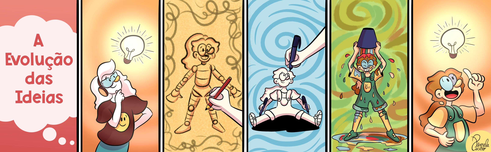
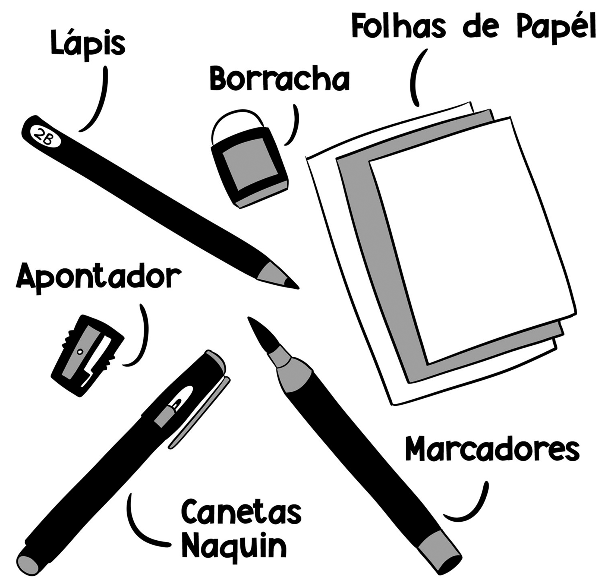
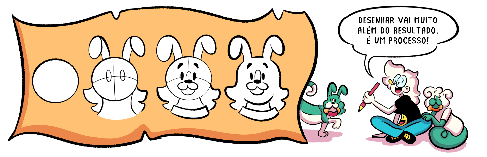
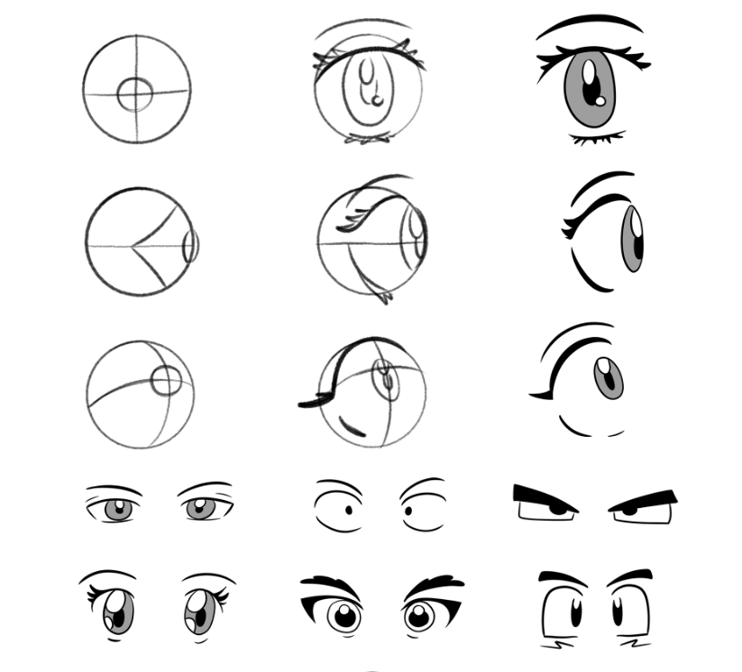
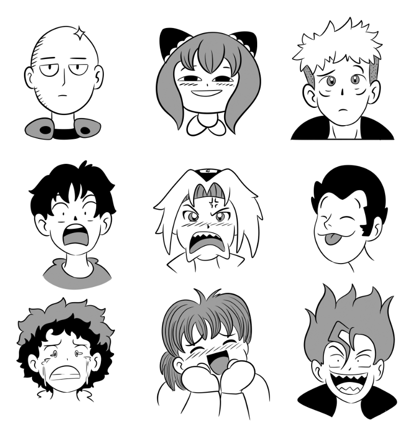
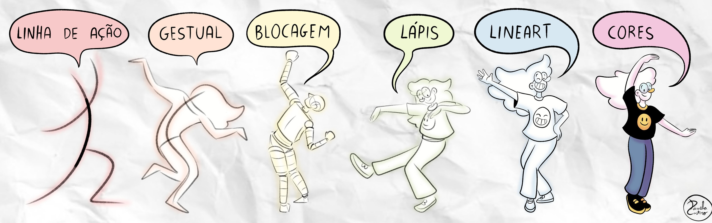
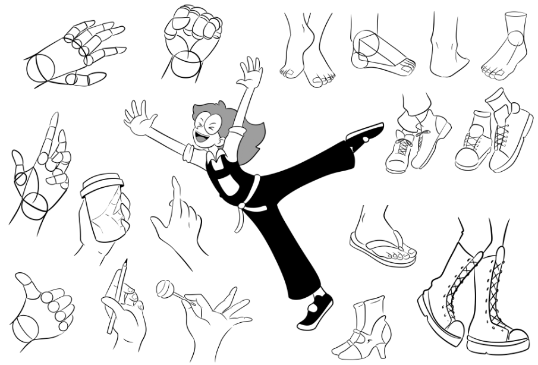
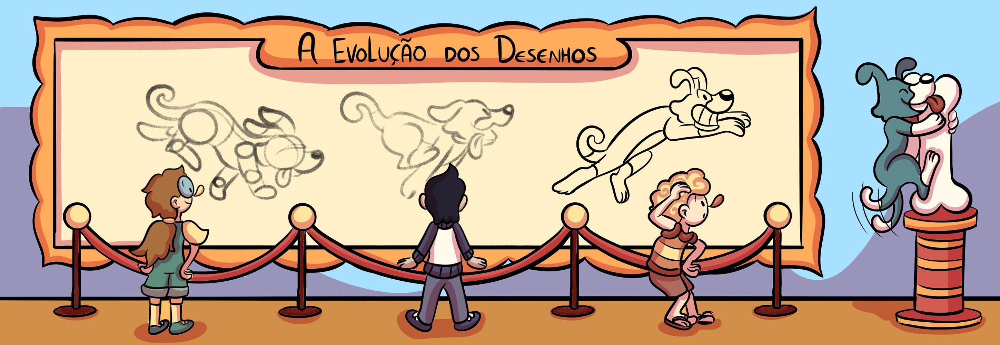

E aí, Pessoal! Antes de começarmos, não precisamos de materiais caros. Alguns itens essenciais para o desenho tradicional são o lápis, a borracha e o papel. Que detalhar os seus desenhos? Marcadores, aquarelas e lápis de cor são ótimas opções!
Nesta aula digital, cada passo abaixo tem o seu próprio "Quadro Mágico". Podem usar o mouse, uma mesa digitalizadora ou os próprios dedos se estiverem no celular.


Comece com um círculo e adicione a íris e a pupila. Experimente diferentes formas e tamanhos de olhos para ver como cada variação pode mudar a personalidade do seu personagem!

Sobrancelhas, olhos, boca, nariz e orelhas são o segredo da expressão! O quadro ao lado já possui um rosto base de fundo. Tente desenhar diferentes emoções por cima dele!


Desenhar mãos pode ser desafiador, mas podemos simplificar ese processo! Comece desenhando a sua própria mão, simplificando as os dedos, a palma da mão e as articulações em formas geométricas simples.
Desenhar pés em diferentes ângulos ajuda a dar dinamismo ao seu personagem. Vamos desenhar alguns juntos e ver como pequenas mudanças podem fazer grande diferença.

Chegou a hora. Junte tudo o que aprendeu. Use a barra de ferramentas abaixo para criar o seu próprio personagem do zero!